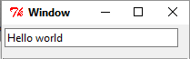
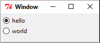
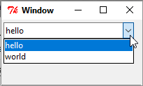
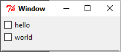
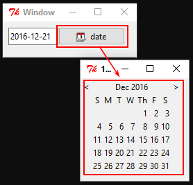
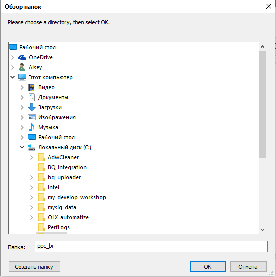
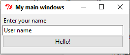
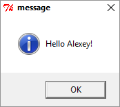
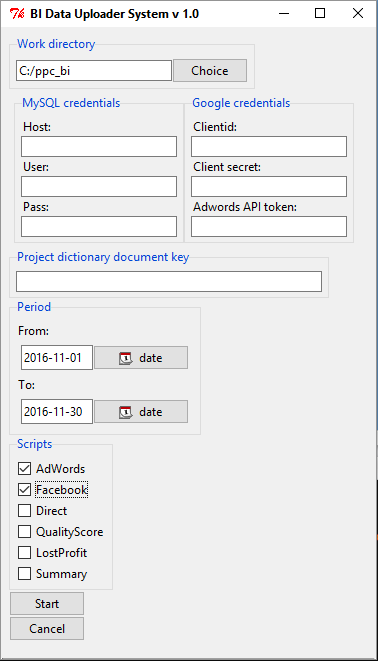

Как разработать графический интерфейс для скриптов R?
Хотите, чтобы ваши R-скрипты могли запускать пользователи без навыков программирования? Создайте понятное десктопное приложение.
Язык R предназначен преимущественно для Back End программирования, но на нем можно разработать довольно удобный графический интерфейс. В этой статье я расскажу, какие графические элементы вы можете построить с помощью пакета «gWidgets», и поделюсь несколькими примерами интерфейса, разработанного в R.
Как установить пакет «gWidgets»?
Разработка интерфейса начинается с установки и подключения пакетов «gWidgets». В консоли R запустите простой код:
install.packages(“gWidgets”)
install.packages(“gWidgetstcltk”)
library(“gWidgets”)
library(“gWidgetstcltk”)
options("guiToolkit"="tcltk")
Какие элементы интерфейса доступны?
В пакете «gWidgets» предоставлено довольно много графических элементов интерфейса — рассмотрим основные.
1. Диалоговое окно — «gwindow» и «gbasicdialog»
Основной и главный контейнер для всех графических элементов интерфейса.
Если вы планируете в дальнейшем запускать разработанный интерфейс с помощью BAT или EXE-файла, рекомендую в качестве главного контейнера использовать «gbasicdialog». При запуске из BAT-файла элемент интерфейса «gwindow» строится и мгновенно закрывается, не дождавшись действий пользователя.
Все же существует способ, который позволит вам запускать интерфейс с помощью BAT-файла, даже если он построен через «gwindow». Сразу после завершения кода графического интерфейса воспользуетесь командой «Sys.sleep(300)», и окно не будет закрываться.
Синтаксис:
gwindow(title = "Window", visible = TRUE, name=title,
width = NULL, height= NULL, parent=NULL,
handler = NULL, action = NULL,
..., toolkit = guiToolkit())
gbasicdialog(title = "Dialog", widget, parent=NULL, do.buttons=TRUE,
handler = NULL, action=NULL, ..., toolkit=guiToolkit())
Основные аргументы:
- title — заголовок диалогового окна.
- visible — видимость диалогового окна, принимает значение «FALSE» или «TRUE». Можно отключить видимость построения окна и всех его элементов, и включить после того, как окно будет полностью сформировано с помощью функции visible.
- handler — обработчик событий, в котором вы прописываете анонимную функцию, запускающуюся при активации элемента. Обязательные аргументы данной функции — function(h,…).
2. Кнопка — «gbutton»
Функция «gbutton» создает кнопку в указанном контейнере.
Синтаксис:
gbutton(text = "", border=TRUE, handler = NULL, action = NULL, container = NULL,
..., toolkit = guiToolkit())
Основные аргументы:
- text — текст кнопки.
- handler — обработчик событий, в котором вы прописываете анонимную функцию, запускающуюся при активации элемента. Обязательные аргументы данной функции — function(h,…).
- container — контейнер, в котором размещается кнопка.
Пример использования:
obj <- gbutton("Hello world", container = gwindow())
3. Ярлык — «glabel»
Текстовый блок в диалоговом окне, который используется для описания различной информации.
Синтаксис:
glabel(text = "", markup = FALSE, editable = FALSE, handler = NULL,
action = NULL, container = NULL, ..., toolkit = guiToolkit())
Основные аргументы:
- text — текст ярлыка.
- handler — обработчик событий, в котором вы прописываете анонимную функцию, запускающуюся при активации элемента. Обязательные аргументы данной функции — function(h,…).
- container — контейнер, в который будет помещен ярлык.
Пример использования:
obj <- glabel("Hello world", container = gwindow())
4. Текстовое поле — «gedit»
В диалоговом окне появится текстовое поле, в которое пользователь может ввести свои данные.

Синтаксис:
gedit(text = "", width = 25, coerce.with = NULL, initial.msg="",
handler = NULL, action = NULL, container = NULL, ..., toolkit = guiToolkit())
Основные аргументы:
- text — текст ярлыка.
- handler — обработчик событий, в котором вы прописываете анонимную функцию, запускающуюся при активации элемента. Обязательные аргументы данной функции — function(h,…).
- container — контейнер для текстового поля.
Пример использования:
obj <- gedit("Hello world", container = gwindow())
5. Список с возможностью выбора одного элемента — «gradio»
Список, в котором можно отметить галочкой один элемент.

Синтаксис:
gradio(items, selected = 1, horizontal = FALSE, handler
= NULL, action = NULL, container = NULL, ..., toolkit = guiToolkit())
Основные аргументы:
- items — вектор значений, возможных для выбора.
- selected — числовое значение номера элемента, который будет выбран по умолчанию.
- horizontal — ориентация списка (TRUE — горизонтальная, FALSE — вертикальная).
- handler — обработчик событий, в котором вы прописываете анонимную функцию, запускающуюся при активации элемента. Обязательные аргументы данной функции — function(h,…).
- container — контейнер, в котором размещается список.
Пример использования:
obj <- gradio(c("hello","world"), container=gwindow())
6. Выпадающий список — «gcombobox»
Выпадающий список — более компактная альтернатива списку с возможностью выбора одного элемента.

Синтаксис:
gcombobox(items, selected = 1, editable = FALSE, coerce.with=NULL, handler = NULL,
action = NULL, container = NULL, ..., toolkit = guiToolkit())
Основные аргументы:
- items — вектор значений, возможных для выбора.
- selected — числовое значение номера элемента, который будет выбран по умолчанию.
- handler — обработчик событий, в котором вы прописываете анонимную функцию, запускающуюся при активации элемента. Обязательные аргументы данной функции — function(h,…).
- container — контейнер для размещения выпадающего списка.
Пример использования:
obj <- gcombobox(c("hello","world"), container=gwindow())
7. Список с возможностью выбора нескольких элементов —«gcheckboxgroup»
Пакет «gcheckboxgroup» дает возможность пользователю отметить галочками любое количество элементов из списка.

Синтаксис:
gcheckboxgroup(items, checked = FALSE, horizontal = FALSE, use.table=FALSE,
handler = NULL, action = NULL, container = NULL, ..., toolkit = guiToolkit())
Основные аргументы:
- items — вектор значений, возможных для выбора.
- horizontal — ориентация списка (TRUE — горизонтальная, FALSE — вертикальная).
- handler — обработчик событий, в котором вы прописываете анонимную функцию, запускающуюся при активации элемента. Обязательные аргументы данной функции — function(h,…).
- container — контейнер для размещения списка.
Пример использования:
obj <- gcheckboxgroup(c("hello","world"), container=gwindow()
8. Календарь — «gcalendar»
С помощью этого элемента удобно выбирать дату.

Синтаксис:
gcalendar(text = "", format = "%Y-%m-%d", handler=NULL,
action=NULL, container = NULL, ..., toolkit = guiToolkit())
Основные аргументы:
- text — дата по умолчанию.
- format — формат в котором будет задана дата.
- handler — обработчик событий, в котором вы прописываете анонимную функцию, запускающуюся при активации элемента. Обязательные аргументы данной функции — function(h,…).
- container — контейнер, в котором размещается календарь.
Пример использования:
obj <- gcalendar(text = as.character(Sys.Date()),container=gwindow())
9. Выбор папки или файла — «gfile»
Данный элемент выводит на экран диалоговое окно для открытия или сохранения файлов и папок.

Синтаксис:
gfile(text = "", type = c("open", "save", "selectdir"), initialfilename = NULL,
filter = list("All files" = list(patterns = c("*")), "R files" =
list(patterns = c("*.R","*.Rdata")),
"text files" = list(mime.types = c("text/plain"))
), multi=FALSE, handler = NULL, action = NULL, ..., toolkit = guiToolkit())
Основные аргументы:
- text — заголовок диалогового окна, открывающегося для выбора файла или папки.
- type — тип диалогового окна, принимает значение «open» (получить путь к файлу), «save» (сохранить объект в виде файла) и «selectdir» (получить путь к папке).
- handler — обработчик событий, в котором вы прописываете анонимную функцию, запускающуюся при активации элемента. Обязательные аргументы данной функции — function(h,…).
Пример использования:
obj <- gbutton("Select file", container=gwindow(), handler = function(h,...) {gfile(text = "Select file", type = "selectdir")})
Как разработать простой графический интерфейс?
Рассмотрим, как можно применять основные элементы пакета. Для примера создадим текстовое поле с возможностью ввести свое имя и кнопку, при нажатии на которую будет появляться приветственное сообщение.
- В качестве основного контейнера выберем «gwindow».
main_window
Функция «gwindow(title = “My main windows”)» создаст главное диалоговое окно, которое вам предстоит наполнить графическими элементами.
- Сначала добавим текстовый ярлык, чтобы объяснить пользователям, какие данные нужно ввести в этом поле.
Для создания ярлыка используйте функцию «glable(“Enter your name”, container = main_window)». Первый аргумент отвечает за текст ярлыка. Аргумент container указывает контейнер, в котором будет отображаться ярлык — мы указали «main_window », так как именно в этот объект сохранили созданное на первом шаге диалоговое окно.
- Последний элемент диалогового окна — кнопка «Hello!».
Кнопка создается с помощью функции «gbutton(“Hello!”, container = main_window, handler = function(h,…)». Первый аргумент отвечает за текст кнопки, второй — указывает контейнер, в котором будет отображаться кнопка. Аргумент «handler» обрабатывает событие, а значит в нем нужно описать функцию, которая выполнится при нажатии кнопки:
function(h,...){
gmessage(paste0("Hello ",svalue(username),"!"))
}
Данная функция выводит на экран сообщение, созданное с помощью функции «gmessage». Чтобы в сообщении появилось имя, заданное пользователем в текстовом поле, я использую функцию «svalue» — она в качестве аргумента принимает объект, значение которого вы хотите получить.
- В результате у вас получится такой код:
#Создаем диалоговое окно
main_window &lt;- gwindow(title = "My main windows")
#Добавляем подпись к текстовому полю
glable("Enter your name", container = main_window)
#Добавляем текстовое поле
username &lt;- gedit("User name", container = main_window)
#Добавляем кнопку
gbutton("Hello!", container = main_window, handler = function(h,...){
#Описываем действия которые будут выполнены при нажатие на кнопку
gmessage(paste0("Hello ",svalue(username),"!"))
})
Запустите код в R-консоли или R Studio, и сформируется диалоговое окно.

В текстовом поле можно ввести свое имя и нажать кнопку «Hello!», после чего появится приветственное сообщение.

Пример сложного графического интерфейса, разработанного в R
Пользуясь пакетом «gWidgets», можно создавать и достаточно сложные интерфейсы.
В этом пункте я поделюсь графическим интерфейсом для запуска скриптов. В диалоговых окнах можно ввести пользовательские параметры, необходимые для подключения к API, выбрать период статистики и конкретные скрипты. После нажатия кнопки «Start» начинается процесс сбора данных.

Скрипт для создания вышеприведенного интерфейса:
library(gWidgets)
library(gWidgetstcltk)
library(lubridate)
options(guiToolkit="tcltk")
#переходим в рабочую директорию
setwd("C:/ppc_bi")
#Период
currentDate &lt;-Sys.Date()
eopm &lt;- currentDate - days(day(currentDate))
sopm &lt;- currentDate - days(day(currentDate))
sopm &lt;- sopm - days(day(sopm) - 1)
#Строим диалоговое окно
win &lt;- gbasicdialog("BI Data Uploader System v 1.0",visible = F,do.buttons=FALSE)
#Выбор рабочей папки
dirgroup &lt;- gframe("Work directory",container = win,horizontal = T)
workdirblock &lt;- gedit("C:/ppc_bi", container = dirgroup)
gbutton("Choice", container = dirgroup,handler = function(h,...) {
workdir &lt;&lt;- gfile("Select directory",type="selectdir")
svalue(workdirblock) &lt;- workdir
setwd(svalue(workdirblock))
})
#Группируем учетные данные
cred_group &lt;- ggroup(container = win)
#Учетные даные MySQL
mysqlgr &lt;- gframe("MySQL credentials",container = cred_group,horizontal = F)
glabel("Host:",container = mysqlgr)
host &lt;- gedit("", container = mysqlgr)
glabel("User:",container = mysqlgr)
user &lt;- gedit("", container = mysqlgr)
glabel("Pass:",container = mysqlgr)
pass &lt;- gedit("", container = mysqlgr)
#Учетные данные Google
gagroup &lt;- gframe("Google credentials",container = cred_group,horizontal = F)
glabel("Clientid:",container = gagroup)
clientid &lt;- gedit("", container = gagroup)
glabel("Client secret:",container = gagroup)
clientsecret &lt;- gedit("", container = gagroup)
glabel("Adwords API token:",container = gagroup)
adwords_api_token &lt;- gedit("", container = gagroup)
#ID докса - справочника проектов
doxgroup &lt;- gframe("Project dictionary document key",container = win)
doxid &lt;- gedit("", container = doxgroup, width = 50)
#Установка отчетного периода
grperiod &lt;- gframe("Period",container = win,horizontal = F)
glabel("From: ",container = grperiod)
date_from &lt;- gcalendar(text = as.character(sopm), format = "%Y-%m-%d", container = grperiod)
glabel("To: ",container = grperiod)
date_to &lt;- gcalendar(text = as.character(eopm), format = "%Y-%m-%d", container = grperiod)
#Выбор скриптов которые необходимо запустить
grscripts &lt;- gframe("Scripts",container = win,horizontal = T)
scripts &lt;- gcheckboxgroup(c("AdWords","Facebook","Direct","QualityScore","LostProfit","Summary"), container=grscripts)
#Кнопка Start
gbutton("Start", container = win,handler = function(h,...) {
dispose(win)
for(scrnum in svalue(scripts)){
scriptName &lt;- paste0(scrnum, ".R")
source(scriptName)
}
})
#Кнопка Cancel
gbutton("Cancel", container = win,handler = function(h,...) {
dispose(win)
})
#Включаем окно
visible(win, set = T)
Выводы
С помощью пакета «gWidgets» вы сможете организовывать R-скрипты в виде десктопных приложений с понятным интерфейсом.
Доступны такие графические элементы:
- Диалоговое окно, в котором будут содержаться все последующие элементы интерфейса.
- Кнопка с текстовой надписью и функцией, которая будет выполнятся при нажатии.
- Текстовый блок, с помощью которого вы сможете объяснить назначение определенных составляющих интерфейса.
- Текстовое поле для ввода данных.
- Списки с возможностью выбора одного или нескольких элементов.
- Выпадающий список, который позволяет более компактно разместить перечень доступных элементов.
- Календарь для удобного выбора дат и периодов.
- Диалоговое окно для выбора папки или файла.
Перечисленных элементов достаточно для создания интерфейсов, которые упростят работу со скриптами на языке R.
В данной статье рассмотрены самые важные возможности пакета «gWidgets», но на самом деле их больше. Если хотите углубиться в разработку пользовательских интерфейсов на языке R, вам будут полезны эти материалы:
- Examples for gWidgets;
- gWidgets API for building toolkit-independent, interactive GUIs;
- Toolkit implementation of gWidgets for tcltk package.